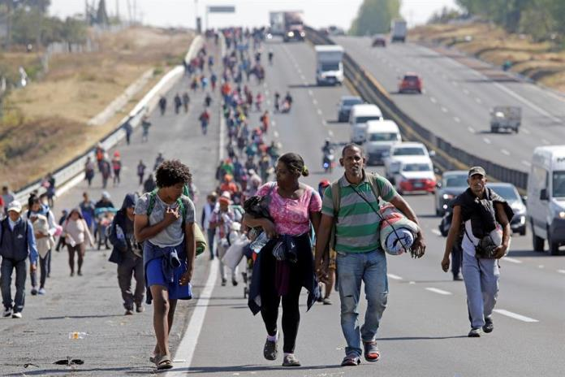

La inmigración es el acto de trasladarse a un país distinto al de nacionalidad o residencia habitual, con la intención de establecerse en él.
Características
La inmigración es parte de la migración, junto con la emigración.
La inmigración se considera desde el lugar de llegada, mientras que la emigración se considera desde el lugar de salida.
La inmigración se produce cuando una persona se establece en un nuevo país por un periodo de al menos doce meses.
Motivaciones
Las personas pueden inmigrar en busca de mejores condiciones de vida.
La inmigración puede estar motivada por la percepción favorable o desfavorable que se tenga de un país.
Evaluación de la inmigración
La inmigración de un país se puede evaluar a través de una balanza migratoria.
Los países con más inmigrantes tienen un saldo positivo, mientras que los países con altas tasas de emigración tienen saldos negativos.

| ANTERIOR | SIGUIENTE | MENU |